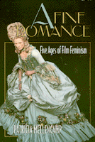

A challenging look at twenty years of feminist film theory
A challenging look at twenty years of feminist film theory


 A challenging look at twenty years of feminist film theory
A challenging look at twenty years of feminist film theory

|  |
A Fine RomanceFive Ages of Film FeminismPatricia Mellencamppaper EAN: 978-1-56639-401-7 (ISBN: 1-56639-401-5) |
"...Mellencamp...has undertaken to address the issues, and that she has done so with great thoroughness, soul searching, wit, and intelligence, will surely position this book as a must-read for film theorists and many other feminists and feminist-influenced scholars and critics."
—Elayne Rapping
"Feminist film theory will soon be a quarter of a century old. It has known the euphoria of the 1970s, experienced the contradictions of the 1980s, and glimpsed the reversals and political gains, which include women of color, of the 1990s." But, Patricia Mellencamp asks, what is the next move?
In this challenging look at twenty years of feminist film theory, Mellencamp elaborates on its rich history, drawing on her personal academic life, and offering inventive readings of a remarkable variety of films: recent Hollywood releases like Forest Gump, Pulp Fiction, Thelma and Louise, Basic Instinct, and Silence of the Lambs, and features and independent films made by women, such as The Piano, Angie, Orlando, Bedevil, Daughters of the Dust, Privilege, and Forbidden Love.
With a clever sense of irony and wit, Mellencamp poses a question from which her analysis takes off: What did Rapunzel, Cinderella and Snow White forget to tell Thelma and Louise? According to Mellencamp, they forgot what comes after "the end," after the wedding to the prince. So many women's stories, often by choice, stop after the prince whisks the princess away to live happily ever after. This book asks, what does "happily" mean for women? And what does "ever after" cost women?
This creative call to shift film feminism's infamous "gaze" from sex and bodies to money and work ascertains where film feminism has been and what it needs to progress. Rather than recycling and regaining the same ground, Mellencamp urges film feminism to explore and claim new territory.
Excerpt available at www.temple.edu/tempress
"Bold, brilliant, radiantly funny and just sizzling with intelligence, A Fine Romance rewrites film history as an action adventure for women. Patricia Mellencamp is one of feminism's most audaciously creative thinkers."
—Meaghan Morris, author of The Pirate's Fiancée: Feminism, Reading, Postmodernism
"This is a book of mega-energetic proportions by a brilliant cultural critic who engages the disabling fiction of romance through a double reading—of films by women from all over the globe and of feminist film theory over the past two decades. A fine romance glitters with Mellencamp's legendary wit. It is also deeply serious and wide-ranging, addressing questions of work and money, age and friendship, obsession and addiction, history and the emotions."
—Kathleen Woodward, Director, Center for Twentieth Century Studies, University of Wisconsin
Acknowledgments
To Begin with...
1. What Cinderella and Snow White Forgot to Tell Thelma and Louise
Age One: Intellectual Feminism
2. "A Fine Romance, with No Kisses": Discourse, Not Intercourse
3. "Sexual Economics": Gold Diggers of 1933
4. Romantic Delusions
5. Fatal Attractions and Obsessions
Age Two: Irascible Feminism
6. Protofeminists
7. Cryptofeminists
Age Three: Experimental Feminism
8. What I Really Want to Do Is Direct
Age Four: Empirical Feminism
9. Archival and Avant-Garde
10. Haunted History
Age Five: Economical Feminism
11. What Virginia Wolf Did Tell Sally Potter
Notes
Index
 | Patricia Mellencamp is Professor of Film and Cultural Theory, Department of Art History, the University of Wisconsin at Milwaukee. She has published several books, including High Anxiety: Catastrophe, Scandal, Age and Indiscretions: Avant-garde Film, Video, and Feminism. |
Cinema Studies
Women's Studies
Culture and the Moving Image, edited by Robert Sklar.
The Culture and the Moving Image series, edited by Robert Sklar, seeks to publish innovative scholarship and criticism on cinema, television, and the culture of the moving image. The series will emphasize works that view these media in their broad cultural and social frameworks. Its themes will include a global perspective on the world-wide production of images; the links between film, television, and video art; a concern with issues of race, class, and gender; and an engagement with the growing convergence of history and theory in moving image studies.
© 2015 Temple University. All Rights Reserved. This page: http://www.temple.edu/tempress/titles/1236_reg.html.